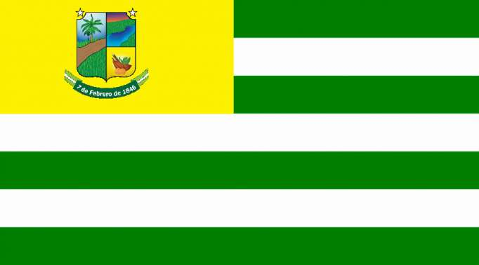
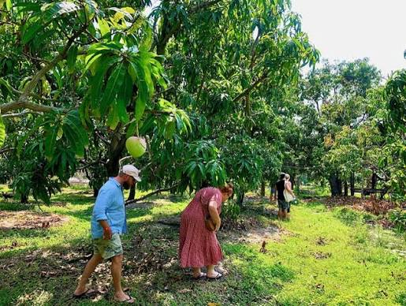
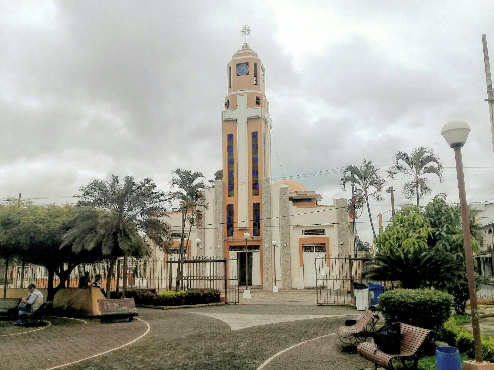
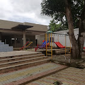
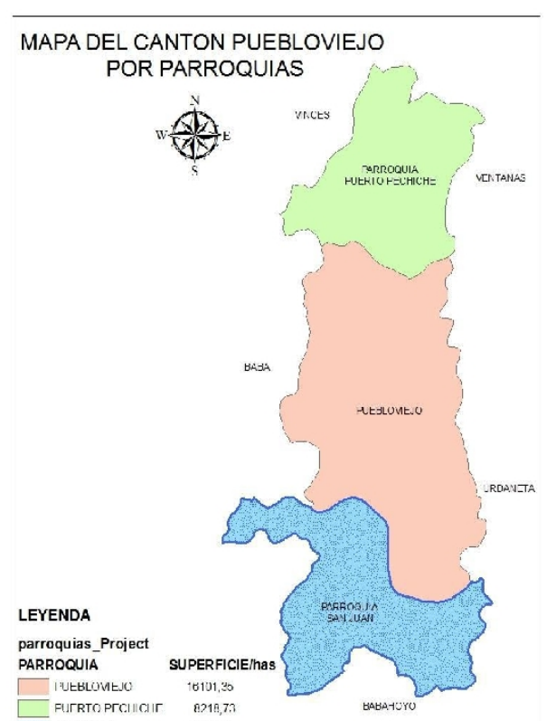

El cantón San Francisco de Puebloviejo está ubicado en la provincia de Los Ríos, Ecuador. Fue cantonizado el 7 de febrero de 1846. Se caracteriza por su actividad agrícola, especialmente por los cultivos de cacao, banano, arroz y maíz. Además, conserva las tradiciones y costumbres de la cultura montubia.

El cantón Puebloviejo está conformado por tres parroquias:
pueblo viejo.La gastronomía del cantón Puebloviejo se caracteriza por sus preparaciones con pescado de río, plátano verde, carne y gallina criolla. Entre sus platos tradicionales se encuentran:
Seco de gallina criolla.Está ubicado en la parroquia San Juan. Es turístico porque ofrece piscinas, pesca deportiva, paseos en kayak, senderismo, camping y degustación de dulces elaborados con mango.

|Es un sitio de interés religioso e histórico. Su construcción original data de 1880 y es importante por su arquitectura y las celebraciones en honor a San Francisco de Asís.

Es un espacio de recreación y encuentro para los habitantes y visitantes. Es ideal para descansar, caminar y compartir en familia.

Permite conocer la historia, el arte y las costumbres de Puebloviejo. Cuenta con biblioteca, espacios para talleres, exposiciones y actividades culturales.

Según el Censo de Población y Vivienda de 2022 del INEC, el cantón Puebloviejo cuenta con 40.961 habitantes, distribuidos entre sus parroquias Puebloviejo, Puerto Pechiche y San Juan.

Volver al índice principal